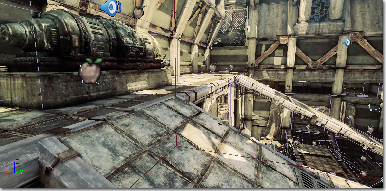
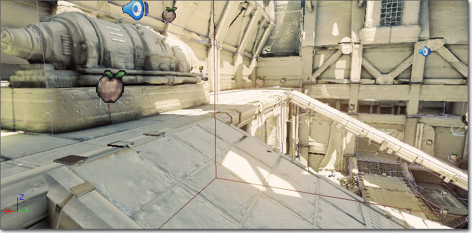

UDN
Search public documentation:
ViewModes
日本語訳
中国翻译
한국어
Interested in the Unreal Engine?
Visit the Unreal Technology site.
Looking for jobs and company info?
Check out the Epic games site.
Questions about support via UDN?
Contact the UDN Staff
中国翻译
한국어
Interested in the Unreal Engine?
Visit the Unreal Technology site.
Looking for jobs and company info?
Check out the Epic games site.
Questions about support via UDN?
Contact the UDN Staff
View Modes
Overview
viewmode console command.
Supported Platforms
Modes
Wireframe
This mode shows the wireframe of all meshes. Command:viewmode wireframe
Brush Wireframe
This mode shows the wireframe of actors and CSG brushes. The BSP wireframe is hidden. This mode only works in the editor.Unlit
This mode shows the diffuse channel of the material used by each mesh. Command:viewmode unlit
Lit
This mode displays the material used by each mesh affected by lighting. It is the default mode in the game. Command:viewmode lit

Detail Lighting
This mode displays meshes with a neutral material affected by lighting with normals. Command:viewmode detaillighting

Lighting Only
This mode displays meshes with a neutral material affected by lighting. Command:viewmode lightingonly
Light Complexity
This mode displays meshes with a solid color based on the number of lights affecting the mesh. Command:viewmode lightcomplexity
The mesh coloration in viewmode lightcomplexity indicates the number of lights affecting a mesh that are not skylights or lightmaps, according to the following scheme (defined in YourGameEngine.ini):
#Lights: Mesh Color0: (R=0,G=0,B=0,A=1)
1: (R=0,G=255,B=0,A=1)
2: (R=63,G=191,B=0,A=1)
3: (R=127,G=127,B=0,A=1)
4: (R=191,G=63,B=0,A=1)
5: (R=255,G=0,B=0,A=1)
Note that light complexity is something that is important to view in game, as most dynamic lights are spawned during game play (e.g. muzzle flashes, explosions, etc).

Texture Density
This viewmode is used for two things:- To check that you're spending the high-res textures on surfaces that matters the most (e.g. close to the camera and not high up on roof tops).
- To check if you have a high-res texture placed next to a low-res texture (sharp contrast in texture resolution), which can look bad.
viewmode texturedensity

Shader Complexity
The Shader Complexity viewmode lets you visualize how many pixel shader instructions were executed on each pixel. The total complexity is calculated as the number of instructions used to render emissive plus instructions for each lighting pass, translucency, distortion and fog volumes. Note that height fog, post process and a few other effects are not counted. The cumulative instruction count is then mapped to bright green for the cheapest pixels to dark green, then dark red, then bright red for an instruction count of 300. The September 09 (not yet released) QA build will have an extended range where pink means an instruction count of 600, and white translates to 900 shader instructions. Masked materials will also be represented more accurately as of that QA build. Only instruction count is used to calculate shader complexity, which may not always be accurate. For example, a shader with 16 instructions, all texture lookups, will be much slower on all platforms than a shader with 16 math instructions. Also shaders which contain loops that are not unrolled will not be represented accurately by the instruction count, this is mainly an issue for vertex shaders. Overall the instruction count is a good metric in the vast majority of cases. A couple of things to notice when using shader complexity:- Be sure to look at shader complexity for your level both in the editor and in game (or PIE). This lets you narrow down whether the level is too expensive or gameplay elements, such as dynamically spawned effect lights, are the cause of poor performance.
- Anything with static lighting should be green, because only the emissive and lightmap terms are used for rendering these objects, so they are very cheap. If static objects are unexpectedly red, make sure you have your lighting built.
- Terrain will often be red, even with lighting built, because the combined terrain material is so expensive. It is important that you make each layer's material as simple as possible, since terrain often covers a lot of pixels.
- Particle systems will usually be red (or worse) because of the massive amount of overdraw.
viewmode shadercomplexity

Lightmap Density
This mode displays the lightmap density of objects that are texture mapped, color coding them by their relation to an ideal/max density setting and displaying a grid that maps to the actual lightmap texels. When in color-mode:- BLUE represents less than ideal texel density
- GREEN represents ideal texel density
- RED represents max or greate texel density
- MinLightMapDensity=0.0
- IdealLightMapDensity=1.0
- MaxLightMapDensity=3.0
viewmode lightmapdensity
Lit Lightmap Density
This mode is the same as 'Lighting Only', but texture mapped objects will also display a grid that maps to the lightmap texels. Command:viewmode litlightmapdensity